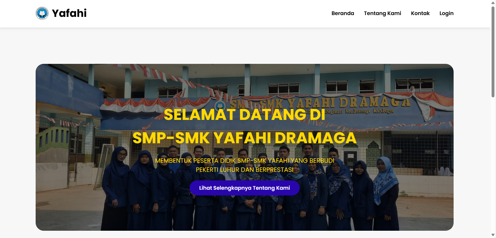
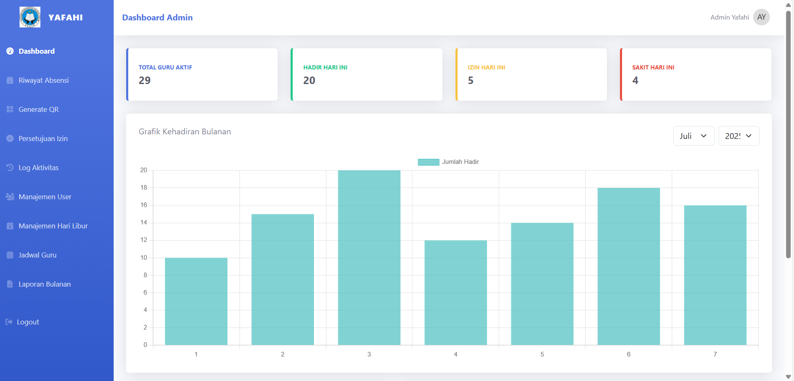
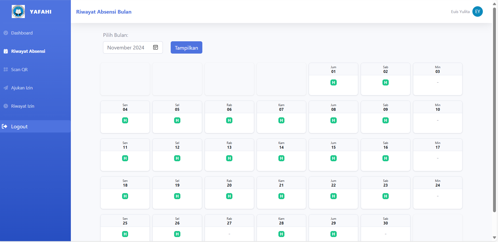

Yafahi - Laravel & QR Code
Yafahi adalah aplikasi berbasis Laravel untuk absensi guru menggunakan QR Code. Aplikasi ini memungkinkan guru melakukan absensi dengan mudah dan cepat melalui pemindaian kode QR, serta menyediakan fitur rekapitulasi kehadiran yang otomatis dan real-time.